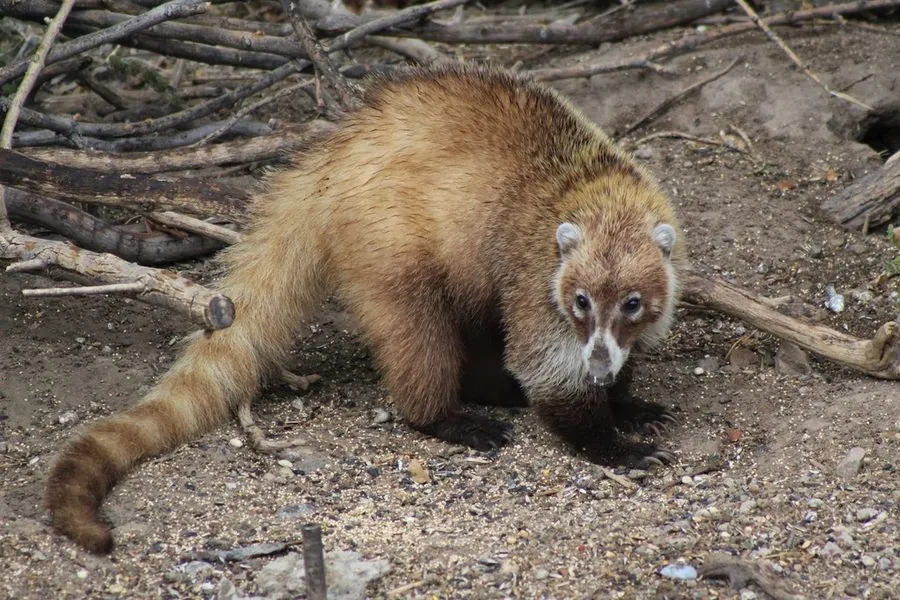

哺乳动物 · 动物界
长鼻浣熊 Nasua narica

中美洲和南美洲的浣熊近亲，吻部细长灵活、尾巴长而带环纹，白天活动，雌性结成群体，善于攀爬和挖掘。
- 分类
- 门脊索动物门纲哺乳纲目食肉目科浣熊科属长鼻浣熊属
- 栖息环境
- 森林、灌丛与农田边缘，多在白天活动
- 地理分布
- 美国南部、中美洲和南美洲北部，从亚利桑那到阿根廷北部
- 保护级别
- IUCN 无危（LC）
物种志
长鼻浣熊体长 0.4–0.7 米，尾长 0.4–0.65 米，体重 4–6 kg。它的吻部细长而灵活，能伸入缝隙寻找食物；被毛为灰褐至红褐色，面部有浅色和深色斑纹，尾巴长而蓬松，带深浅环纹；四肢短而有力，爪长，适合攀爬和挖掘。
长鼻浣熊分布于美国南部、中美洲和南美洲北部的森林、灌丛和农田边缘，从亚利桑那到阿根廷北部。它与多数浣熊不同，多在白天活动，结成 6–20 只的雌性与幼仔群体，成年雄性则独居；以果实、昆虫、蠕虫、小型脊椎动物和鸟卵为食，常在落叶层和腐木中翻找猎物。雌性妊娠期约 77 天，每胎 2–6 仔。长鼻浣熊适应力较强，种群总体稳定，被列为无危。
形态与习性
- 食性果实、昆虫、蠕虫、小型脊椎动物与鸟卵
- 体长0.4–0.7 m，尾长 0.4–0.65 m
- 体重4–6 kg
- 寿命野外约 7–8 年
- 繁殖妊娠期约 77 天，每胎 2–6 仔
- 社会结构雌性与幼仔结成 6–20 只的群体，成年雄性独居
- 活动节律多在白天活动
趣味知识
- 长鼻浣熊的吻部细长灵活，可以伸进缝隙寻找食物。
- 它们多在白天活动，与多数夜间活动的浣熊不同。
- 雌性和幼仔结成群体，成年雄性则独来独往。
- 长鼻浣熊的尾巴长而蓬松，带深浅相间的环纹。